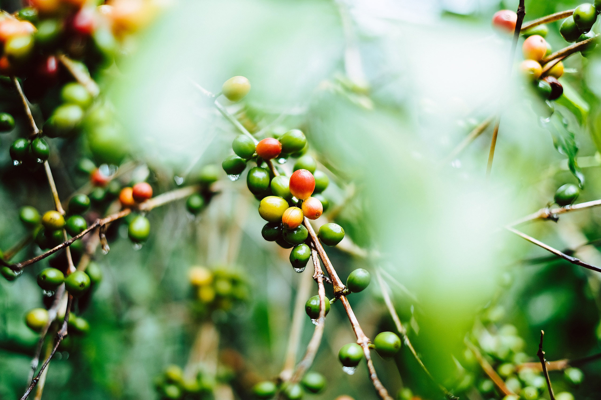

Rösterei & Café
Kaffee aus Kiel, direkt gehandelt und geröstet in der eigenen Rösterei, serviert im gemütlichen Café in der Innenstadt.
| Komm vorbei! | Mo – Fr 8–18 Uhr |
| Fraunhoferstr. 13, Kiel | Sa 11–18 Uhr |
Bio und Fair
Weit hinten, hinter den Wortbergen, fern der Länder Vokalien und Konsonantien leben die Blindtexte. Weit hinten, hinter den Wortbergen, fern der Länder Vokalien und Konsonantien leben die Blindtexte. Und das alles in bester Bio Qualität
